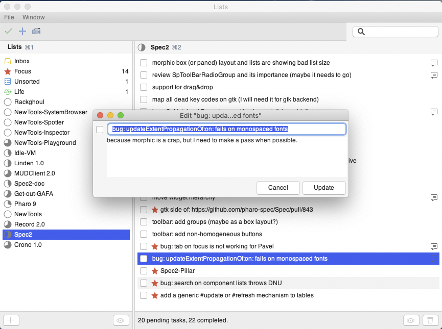
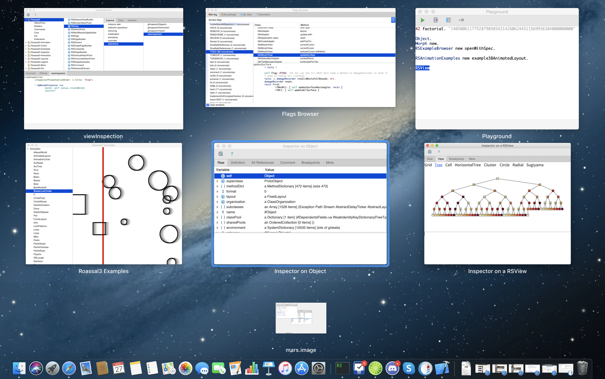
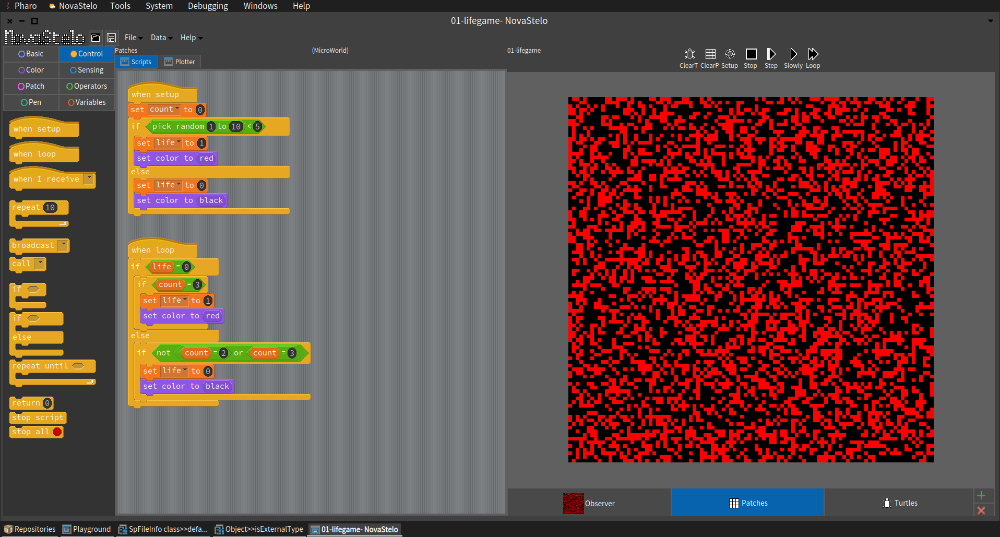
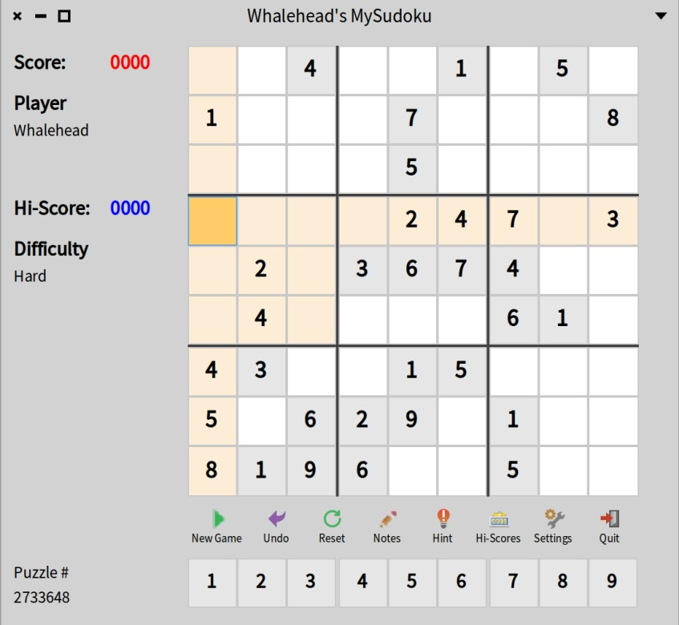

1 Introduction
Spec is a framework in Pharo for describing user interfaces. It allows for the construction of a wide variety of UIs; from small windows with a few buttons up to complex tools like a debugger. Indeed, multiple tools in Pharo are written in Spec, e.g., Iceberg the git manager, Change Sorter, Critics Browser, and the Pharo debugger. An important architectural decision is that Spec supports multiple backends (at the time of writing this book, GTK and Morphic are available).

1.1 Reuse of logic
The fundamental principle behind Spec is the reuse of user interface logic and its visual composition. User interfaces are built by reusing and composing existing user interfaces, and configuring them as needed. This principle starts from the most primitive elements of the UI: widgets such as buttons and labels are in themselves complete UIs that can be reused, configured, and opened in a window. These elements can be combined to form more complex UIs that again can be reused as part of a bigger UI, and so on. This is somewhat similar to how the different tiles on the cover of this book are combined. Smaller tiles configured with different colors or patterns join to form bigger rectangular shapes that are part of an even bigger floor design.
To allow such reuse, Spec was influenced by VisualWorks' and Dolphin Smalltalk's Model View Presenter (MVP) pattern. Spec recognizes the need for a Presenter class. A presenter represents the glue between a domain and widgets as well as the logic of interaction between the widgets composing the application.
In Spec 1.0, this role was filled by the class ComposableModel and now, in Spec 2.0, the class is called SpPresenter. A presenter manages the logic UI and the link between widgets and domain objects. Fundamentally, when writing Spec code, developers do not come into contact with UI widgets. Instead, they program a Presenter that holds the UI logic (interactions, layout, ...) and talks to domain objects. When the UI is opened, this presenter instantiates the appropriate widgets. This being said, for developers, this distinction is not apparent and it feels as if the widgets are being programmed directly.
Spec is the standard GUI framework in Pharo and differs from Pharo's other GUI frameworks such as Morphic. It is restricted in that it only allows one to build user interfaces for applications that have typical GUI widgets such as buttons, lists, etc. It cannot be used as a general drawing framework, but you can integrate a canvas inside a Spec component.
For example, you can embed a Roassal visualization (see Figure 1.2), or you can extend Spec itself with additional native components.

Another example of integration is the NovaStelo project of Prof. E. Ito as shown in Figure 1.3. It shows that Spec can be used for the overall structure of the application and embed specific elements. Figure 1.4 is the screenshot developed from a community member named Walehead.


1.2 Spec 2.0
Since Spec 2.0, different widget sets can be used to render your applications. At the time of writing this book, Spec can be rendered using either Morphic or GTK as a backend.
Spec 2.0 represents a large iteration over Spec 1.0. Many enhancements have been introduced: the way user interface layouts are expressed, the API has been revisited, new widgets are supported, and integration with other projects, such as Commander, has been added.
Pharo's objective is to use Spec to build all its own GUIs. This ensures strong support of Spec over time and improves the standardization of Pharo's interfaces as well as their portability to new graphical systems. Using Spec 2.0 provides backend independence and logic reuse. This means that a UI written in Spec will be rendered on backends other than GTK and Morphic. As new backends become available, all applications written in Spec will be able to use them.
While this book uses previous Spec documentation as a foundation, the text has been almost completely rewritten to achieve higher quality. It covers recent features. We hope that it will be useful to developers who write UIs in Pharo.
This book focuses on Pharo 12. Earlier versions of Pharo come equipped with different versions of Spec, which may cause some code samples from this book to break. Nevertheless, the fundamental principles of UI development in Spec are the same.
1.3 Code
The code of all the examples in this book is stored at https://github.com/SquareBracketAssociates/CodeOfSpec20Book.
You can load the code by evaluating this code snippet:
Metacello new
baseline: 'CodeOfSpec20Book';
repository: 'github://SquareBracketAssociates/CodeOfSpec20Book/src';
load1.4 Acknowledgements
Even though due to the lack of manpower the fundraising campaign was not used, the authors would like to express their warm gratitude to the following people for their financial support: Masashi Fujita, Roch-Alexandre Nominé, Eiichiro Ito, sumim, Hilaire Fernandes, Dominique Dartois, Philippe Mougin, Pavel Krivanek, Michael L. Davis, Ewan Dawson, Luc Fabresse, David Bajger, Jörg Frank, Petter Egesund, Pierre Bulens, Tomohiro Oda, Sebastian Heidbrink, Alexandre Bergel, Jonas Skučas, and Mark Schwenk.
We want to thank I. Thomas for her chapter on the inspector, and R. De Villemeur for the chapter on Athens integration.
Finally, Stéphane Ducasse wants to thank Johan Fabry for his co-authoring of the first book on Spec 1.0. Without that first book, this one would not exist. He wants to thank Koen who happily jumped in as a co-author and tremendously improved the book. Thanks again Koen. It was a fun journey.
We want to thank ESUG and the Pharo Association for sponsoring this book. It was a real multiple year effort.
If you supported us and you are not on this list, please contact us or do a pull request.